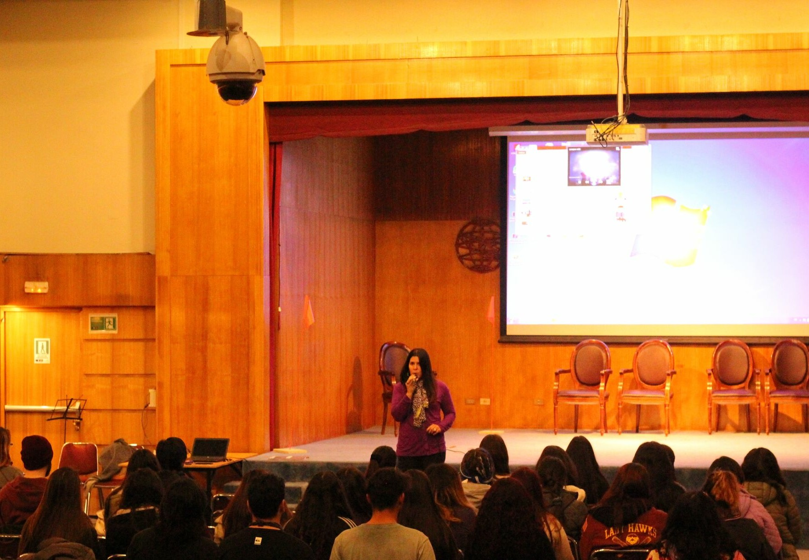
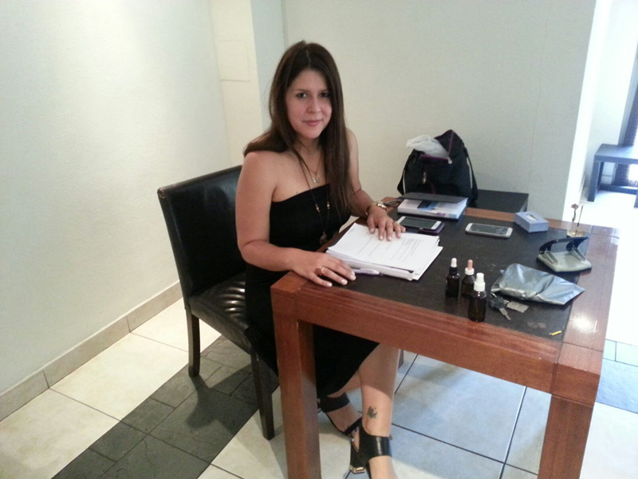
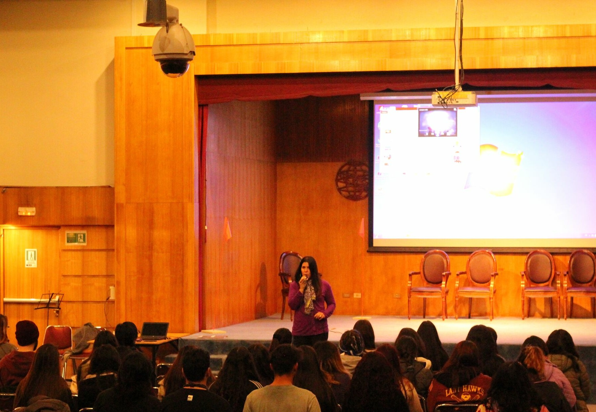
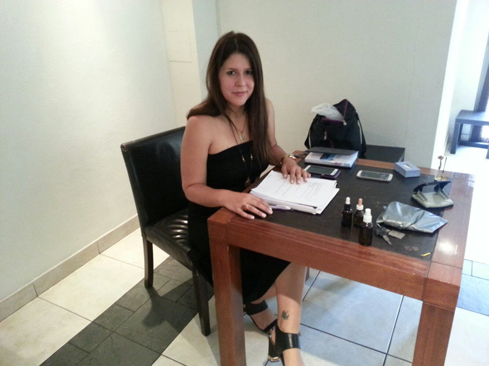
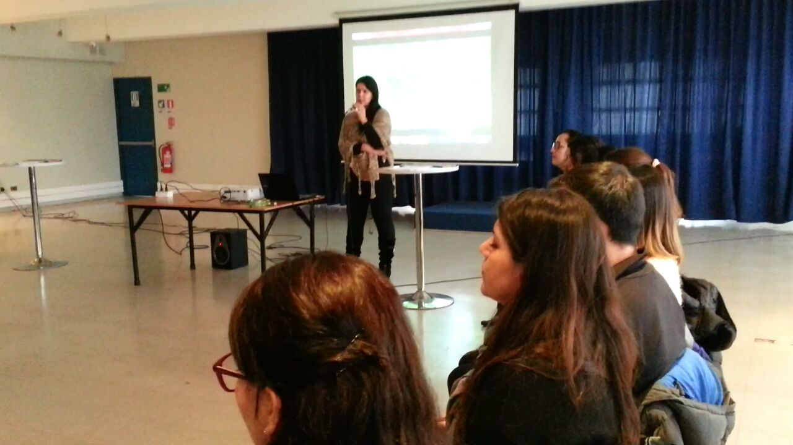
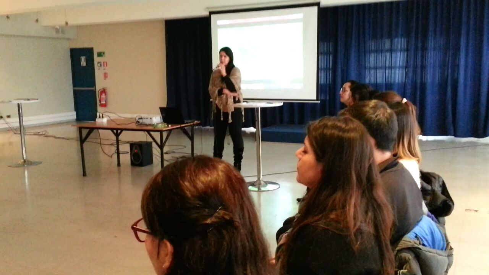

 

Muriel Lama
Muriel Lama postula que todos tenemos la capacidad de Autosanarnos y
atraer nuestros sueños a la realidad, vivir la vida que realmente merecemos,
siendo felices, repletos de amor y paz. Muriel, nació y vivió en Brasil,
aprendiendo y practicando desde su infancia técnicas de meditación con
visualizaciones, logrando el equilibrio emocional y fÌsico.
Este aprendizaje de tan pequeña lo ha integrado en diversos ámbitos de su vida,
lo que la ha fortalecido, enriquecido y ha sido de gran importancia en el
logro de sus sueños y objetivos personales. Dichas técnicas son enseñadas en sus
terapias, talleres y cursos.
Muriel Lama es Maestra en Reiki, Terapeuta de Flores de Bach, Biomagnetismo y Meditación,
Radiestesista, Músicoterapeuta, Cantante y Compositora. Durante más de 10 años
se ha desarrollado como terapeuta tanto en Brasil como en Chile logrando excelentes y
gratificantes resultados.
Ha dedicado gran parte de su vida también a la música como cantante y compositora.
Muriel está certifica a nivel internacional de Terapeuta de Flores de Bach en Inglaterra
por Bach Foundation International Register (BFRP), Tiene un Diplomado en Liderazgo,
es el sexto linaje como Maestra de Reiki Usui System, ha asistido a diferentes talleres
adquiriendo varias herramientas de Autosanación, entre ellos Neurofelicidad,
Meditación de Sonido Primordial del Dr. Deepack Chopra, Cantoterapia, Sonidoterapia,
Danzoterapia, Meditaciones con Visualizaciones ,Técnicas de Autosanación de Louise Hay,
entre otros. Muriel siempre ha considerado que es de suma importancia poder seguir aprendiendo
diferentes técnicas para seguir creciendo y ayudando.
En la actualidad Muriel Lama es dueña y creadora de la empresa Muriel Flowers,
realiza clases de meditación, Reiki y Flores de Bach para empresas,
talleres de Meditación para mejorar la concentración a los alumnos
de la Universidad Central, Talleres de Técnicas de Autosanación de
Enfermedades y técnicas para dejar de fumar y bajar de peso, talleres de
Bienestar y Salud a empresas.
En forma particular realiza Terapias, clases, talleres y cursos.
Dentro de su curriculum cabe destacar que ha realizado cursos para:
- Fundación de la Fuerza Aérea de Chile
- Instituto de Salud Pública de Chile
- Banco Falabella
- Sportlife
- Universidad San Sebastian
- Universidad Central
- Spanflores
- Mutualidad del Ejército y Aviación